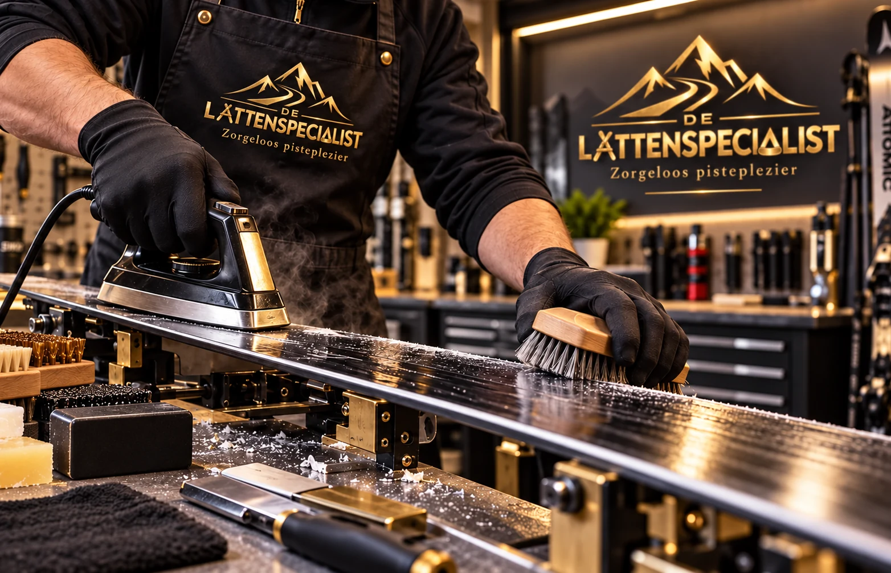
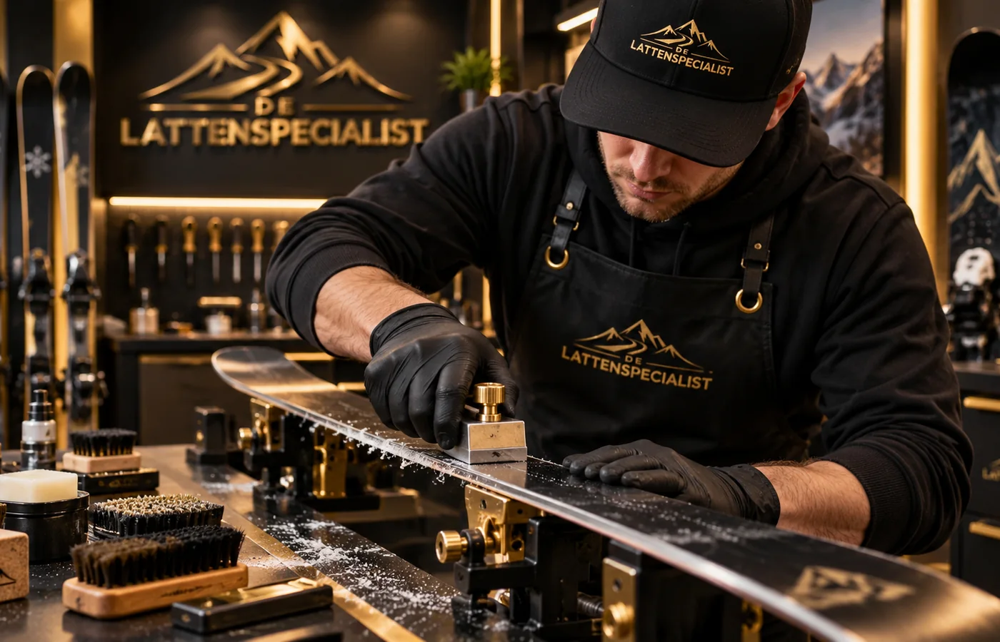
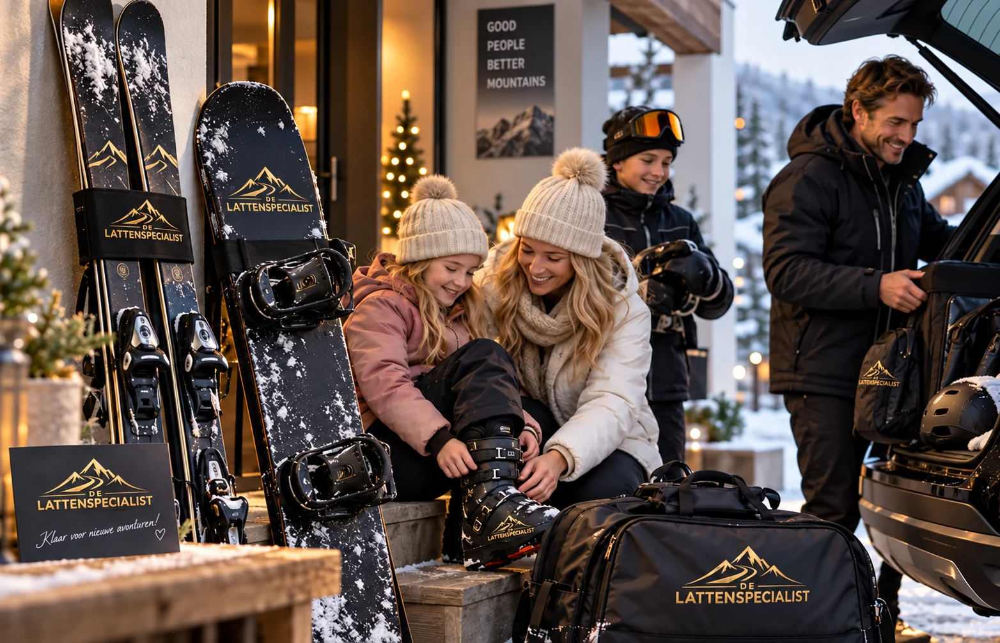

Wax & verzorging
Ski€ 19,95
Snowboard€ 24,95
- Belag reinigen en oude waxresten verwijderen
- Verse premium warme wax
- Afkoelen en afschrapen
- Uitborstelen en finish
Ambachtelijk onderhoud met hoogwaardige producten, gericht op grip, glijvermogen én zo lang mogelijk plezier van je materiaal.
Liever direct WhatsApp? 06 18 32 71 32 →Wij bekijken je materiaal eerst. Is een andere behandeling slimmer dan wat je hebt gekozen, dan overleggen we vóórdat we extra werk uitvoeren.
Heldere pakketten voor ski's en snowboards. We behandelen wat nodig is en voorkomen onnodige slijtage.
Alle genoemde consumentenprijzen zijn inclusief btw.
Ook mogelijk als een volledig pakket niet nodig is.
Spoed? Dan geven we je onderhoud in overleg voorrang in de werkplanning. Extra haal- of brengritten vallen niet onder de spoedtoeslag. Zelf brengen en ophalen kan op afspraak.
Eerst controleren en reinigen, daarna gericht behandelen. Zo krijgt ieder materiaal verse premium wax en alleen het onderhoud dat werkelijk nodig is.
We controleren belag, kanten en eventuele beschadigingen.
Vuil en oude waxresten worden verwijderd, zodat de nieuwe wax goed kan worden aangebracht.
Waar nodig behandelen we de kanten voor grip en controle.
We kiezen de wax passend bij bestemming, reisperiode en verwachte omstandigheden.
Na het afkoelen verwijderen we overtollige wax en borstelen we het belag zorgvuldig uit.


Goed onderhoud is niet alleen een scherpe kant of verse wax. Het is bepalen wat je materiaal werkelijk nodig heeft.
Bij een eerste onderhoudsbeurt beginnen we met een grondige controle en reiniging. Oude waxresten en vuil worden verwijderd voordat we verse hoogwaardige warme wax aanbrengen. Zo weet je dat je materiaal met een verzorgde basis en nieuwe wax de piste op gaat.
Het doel: zorgeloos pisteplezier én langer plezier van je materiaal.
Van waxen en borstelen tot kantentuning en het ophalen van je materiaal: rustig, gericht en met oog voor de staat van je ski of snowboard.
De gratis haal- & brengservice geldt in West Maas en Waal en in Druten, Afferden en Horssen.
We halen onderhoud in principe op vrijdag, zaterdag of zondag en brengen het materiaal het daaropvolgende weekend weer terug.
Plan je onderhoud
Geen gedoe vlak voor vertrek. Goed onderhouden materiaal geeft vertrouwen, grip en plezier zodra je de piste op gaat.
Maak een afspraakBekijk met je persoonlijke servicecode de actuele status van je materiaal. Plan daarnaast je waxkeuze met bestemming, reisdatum, temperatuur en sneeuwconditie.
Zoek je ski's, een snowboard of een complete set? Geef je maten, niveau en reisperiode door. We bekijken vervolgens of we een passende set kunnen aanbieden of regelen.
We kijken naar lengte, schoenmaat, niveau en reisperiode.
We tonen geen vaste aantallen; beschikbaarheid kan per periode veranderen.
Je aanvraag is pas definitief nadat maat, periode en prijs persoonlijk zijn bevestigd.
Deel je ervaring of verbeterpunt. Met jouw toestemming kunnen we je reactie later op de website plaatsen.
Twijfel je, dan beoordelen we het materiaal eerst. We adviseren wat past bij de staat van je ski of snowboard. Extra werkzaamheden voeren we alleen uit na overleg.
Vlakslijpen verwijdert materiaal. Soms is dat nodig en dan is het een goede behandeling, maar we willen het niet automatisch bij iedere beurt doen. Waar mogelijk kiezen we voor gerichter onderhoud.
We controleren en reinigen het belag voordat we nieuwe wax aanbrengen. Vuil en oude waxresten worden verwijderd, waarna verse premium warme wax wordt aangebracht, afgekoeld, afgeschraapt en uitgeborsteld.
In West Maas en Waal en in Druten, Afferden en Horssen. Buiten dit gebied kun je je materiaal op afspraak zelf in Wamel brengen en ophalen.
Ja. Brengen en ophalen in Wamel kan op afspraak. Dat is ook handig bij spoedonderhoud.
Als je je materiaal eerder nodig hebt dan de normale onderhoudsronde, kunnen we het in overleg voorrang geven. Dat kost € 10 extra en is alleen mogelijk als de planning het toelaat. Extra ritten zijn niet inbegrepen.
Na het onderhoud ontvang je een betaalverzoek. Zo is vooraf duidelijk wat er is uitgevoerd en betaal je pas wanneer je materiaal klaar is.
We herstellen lichte, oppervlakkige belagschade en eenvoudige lokale P‑Tex-beschadigingen. Diepe kernschade, staalkantschade en constructieve reparaties beoordelen we apart en kunnen buiten onze service vallen.
Verstuur je aanvraag rechtstreeks via de website. Je ontvangt meteen een aanvraagcode; daarna bevestigen we persoonlijk de planning en eventuele bijzonderheden. Na het onderhoud ontvang je een betaalverzoek.